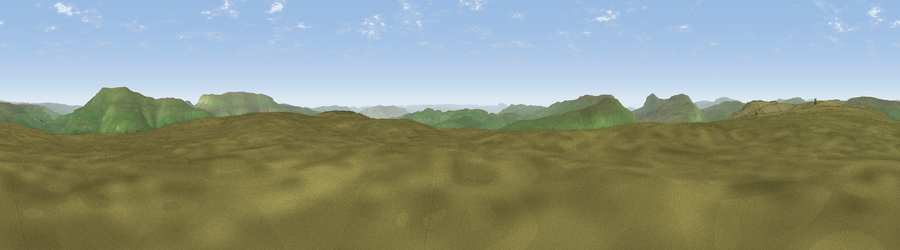

Viewpoint near Starbotton
#10670 in England · top 19% of its area beats it · near StarbottonWhere it is
The exact computed spot (SD 92598 74835). Click the marker for map links.
The view, rendered

A 360° render of this exact spot computed from the terrain model, tree cover and land cover — summer colours, afternoon light, calibrated against photographs of famous viewpoints. Real trees, hedges and buildings will differ in detail.
The panorama
Grey silhouette: terrain skyline in each direction (720 bearings, Earth curvature and refraction included). Dashed green: skyline with trees (+15 m) and buildings (+8 m) as obstacles. Blue strip: how far the ground is visible on each bearing.
Where the view opens
Wedge length = distance to the farthest visible ground on that bearing (vegetation-aware). Rings at 10, 25 and 50 km.
What fills the view
100% grassland
Angular shares of the visible panorama (visual magnitude), not map area. Landscape diversity 0.01 (0–1 Shannon).
Key numbers
More beautiful places nearby
The staircase of upgrades: each row has a higher view potential than everything closer. Driving times are estimates from straight-line distance, calibrated against real road routing — check an actual route before setting out.
| Place | Direction | Drive | Score |
|---|---|---|---|
| Viewpoint near Starbotton | SE · 2 km | ~4 min | 64.5 |
| Viewpoint near Starbotton | SE · 2 km | ~5 min | 68.9 |
| Viewpoint near Buckden | NE · 5 km | ~10 min | 75.5 |
| Viewpoint near Buckden | NE · 5 km | ~11 min | 77.3 |
| Little Ingleborough | W · 18 km | ~32 min | 78.8 |
| Viewpoint near Ingleton | W · 18 km | ~32 min | 79.5 |
| Whernside | WNW · 20 km | ~34 min | 79.9 |
| Warton Crag | W · 43 km | ~63 min | 83.2 |
54.16926, -2.11488 · source: osm peak · position refined by local search. Computed location — check access rights before visiting.